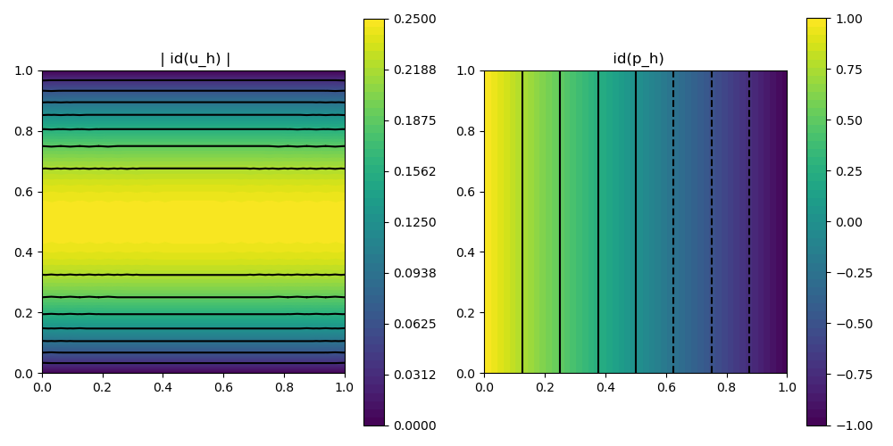

221 : Stokes iterated penalty method 2D
This example computes a velocity $\mathbf{u}$ and pressure $\mathbf{p}$ of the incompressible Navier–Stokes problem
\[\begin{aligned} - \mu \Delta \mathbf{u} + (\mathbf{u} \cdot \nabla) \mathbf{u} + \nabla p & = \mathbf{0}\\ \mathrm{div}(u) & = 0 \end{aligned}\]
with some viscosity parameter $\mu$.
Here we solve the simple Hagen-Poiseuille flow on the two-dimensional unit square domain with the iterated penalty method. Given intermediate solution $\mathbf{u}$ and $p$ the next approximations are computed by the two equations
\[\begin{aligned} (\nabla \mathbf{u}^{next}, \nabla \mathbf{v}) + ((\mathbf{u}^{next} \cdot \nabla) \mathbf{u}^{next}, \mathbf{v}) + \epsilon (\mathrm{div}(\mathbf{u}) ,\mathrm{div}(v)) & = (\mathbf{f},\mathbf{v}) + (p,\mathrm{div}(\mathbf{v})) && \text{for all } \mathbf{v} \in \mathbf{V}\\ (p^{next},q) & = (p,q) - (\mathrm{div}(\mathbf{u}^{next}),q) && \text{for all } \mathbf{q} \in Q \end{aligned}\]
This is done consecutively until the residual of both equations is small enough. (The convection term is linearised by auto-differentiated Newton terms.)
module Example221_StokesIterated2D
using GradientRobustMultiPhysics
using ExtendableGrids
using Printf
# data for Hagen-Poiseuille flow
function exact_pressure!(viscosity)
function closure(result,x::Array{<:Real,1})
result[1] = viscosity*(-2*x[1]+1.0)
end
end
function exact_velocity!(result,x::Array{<:Real,1})
result[1] = x[2]*(1.0-x[2]);
result[2] = 0.0;
end
# everything is wrapped in a main function
function main(; verbosity = 0, Plotter = nothing, nonlinear = false, div_penalty = 1e4, viscosity = 1.0)
# set verbosity level
set_verbosity(verbosity)
# initial grid
xgrid = uniform_refine(grid_unitsquare(Triangle2D),4);
# Taylor--Hood element
FETypes = [H1P2{2,2}, H1P1{1}];
# negotiate data functions to the package
user_function_velocity = DataFunction(exact_velocity!, [2,2]; name = "u", dependencies = "X", quadorder = 2)
user_function_pressure = DataFunction(exact_pressure!(viscosity), [1,2]; name = "p", dependencies = "X", quadorder = 1)
# generate Stokes problem
Problem = PDEDescription("NSE (iterated penalty)")
add_unknown!(Problem; equation_name = "velocity update", unknown_name = "u")
add_unknown!(Problem; equation_name = "pressure update", unknown_name = "p")
add_constraint!(Problem, FixedIntegralMean(2,0))
# add boundary data
add_boundarydata!(Problem, 1, [1,2,3,4], InterpolateDirichletBoundary; data = user_function_velocity)
# velocity update equation
add_operator!(Problem, [1,1], LaplaceOperator(viscosity; store = true))
add_operator!(Problem, [1,2], AbstractBilinearForm([Divergence, Identity]; name = "(div(v),p)", store = true, factor = -1))
add_operator!(Problem, [1,1], ConvectionOperator(1, Identity, 2, 2; auto_newton = true))
add_operator!(Problem, [1,1], AbstractBilinearForm([Divergence, Divergence]; name = "ϵ (div(u),div(v))", store = true, factor = div_penalty))
# pressure update equation
BLF_MAMA = AbstractBilinearForm([Identity, Identity]; name = "(p,q)")
add_operator!(Problem, [2,1], AbstractBilinearForm([Identity, Divergence]; name = "(q,div(u))", store = true, factor = div_penalty))
add_operator!(Problem, [2,2], BLF_MAMA)
add_rhsdata!(Problem, 2, restrict_operator(BLF_MAMA; fixed_arguments = [1], fixed_arguments_ids = [2]))
@show Problem
# discretise and solve problem
FES = [FESpace{FETypes[1]}(xgrid), FESpace{FETypes[2]}(xgrid; broken = true)]
Solution = FEVector{Float64}(["u_h","p_h"],[FES[1],FES[2]])
solve!(Solution, Problem; subiterations = [[1],[2]], maxiterations = 20, show_solver_config = true)
# calculate L2 error and L2 curl error
L2ErrorEvaluatorV = L2ErrorIntegrator(Float64, user_function_velocity, Identity)
L2ErrorEvaluatorP = L2ErrorIntegrator(Float64, user_function_pressure, Identity)
println("|| u - u_h || = $(sqrt(evaluate(L2ErrorEvaluatorV,Solution[1])))")
println("|| p - p_h || = $(sqrt(evaluate(L2ErrorEvaluatorP,Solution[2])))")
# plot
GradientRobustMultiPhysics.plot(xgrid, [Solution[1], Solution[2]], [Identity, Identity]; Plotter = Plotter)
end
endThis page was generated using Literate.jl.
Default output:
julia> Example221_StokesIterated2D.main()
PDE-DESCRIPTION
===============
system name = NSE (iterated penalty)
id | unknown name / equation name
[1] | u / velocity update
[2] | p / pressure update
LHS block | PDEOperator(s)
[1,1] | ∇(u):∇(v) (APT = SymmetricBilinearForm, AT = ON_CELLS, regions = [0])
| (id(u) ⋅ ∇) u ⋅ id(v) [AD-Newton] (APT = NonlinearForm, AT = ON_CELLS, regions = [0])
| ϵ (div(u),div(v)) (APT = BilinearForm, AT = ON_CELLS, regions = [0])
[1,2] | (div(v),p) (APT = BilinearForm, AT = ON_CELLS, regions = [0])
[2,1] | (q,div(u)) (APT = BilinearForm, AT = ON_CELLS, regions = [0])
[2,2] | (p,q) (APT = BilinearForm, AT = ON_CELLS, regions = [0])
RHS block | PDEOperator(s)
[1] | (id(u) ⋅ ∇) u ⋅ id(v) [AD-Newton] (APT = NonlinearForm, AT = ON_CELLS, regions = [0])
[2] | (p,q) (APT = BilinearForm, AT = ON_CELLS, regions = [0])
BoundaryOperator[1] : InterpolateDirichletBoundary -> [1, 2, 3, 4]
BoundaryOperator[2] :
GlobalConstraints[1] : Mean[2] != 0
Problem =
SC =
SOLVER-CONFIGURATION
======================
overall nonlinear = true
overall timedependent = false
anderson_iterations = 0
subiterations = [[1], [2]]
show_iteration_details = true
timedependent_equations = Any[]
anderson_unknowns = [1]
show_statistics = false
anderson_metric = l2
skip_update = [1, 1]
linsolver = GradientRobustMultiPhysics.LinearSystem{Float64, Int64, LUFactorization}
damping = 0
time = 0
show_solver_config = true
anderson_damping = 1
check_nonlinear_residual = true
fixed_penalty = 1.0e60
target_residual = 1.0e-10
maxiterations = 20
AssemblyTriggers =
LHS_AT[1] : A T
LHS_AT[2] : T I
RHS_AT[1] : A
RHS_AT[2] : A
(I = Once, T = EachTimeStep/SubIteration, A = Always, N = Never)
LHS_dependencies = [[1] [1, 2]; [2, 1] [2]]
ITERATION | LSRESIDUAL | NLRESIDUAL
--------------------------------------
1 | 4.149845e-11 | 5.048465e-02
2 | 4.147779e-11 | 2.431378e-05
3 | 4.321489e-11 | 7.249716e-07
4 | 4.167618e-11 | 9.760009e-08
5 | 4.198014e-11 | 1.364276e-08
6 | 4.176700e-11 | 1.931939e-09
7 | 4.161598e-11 | 2.874690e-10
8 | 4.256268e-11 | 9.280416e-11
|| u - u_h || = 6.337247053829753e-12
|| p - p_h || = 3.7947937853318843e-10